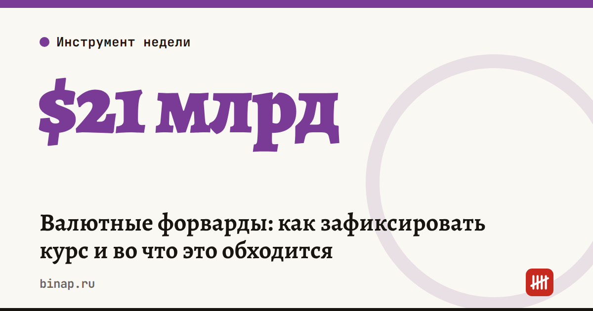

Валютные форварды: как зафиксировать курс и во что это обходится

По подсчётам ЦБ, за первое полугодие 2026 года объём валютных форвардов компаний вырос примерно в полтора раза — с почти $14 млрд до $21 млрд. Разбираем, как работает инструмент и когда он нужен малому бизнесу.
Что это значит: - Форвард — договор с банком: вы заранее фиксируете сумму, курс и дату обмена валюты. - За полгода компании заключили около 18,5 тыс. таких договоров — вдвое больше, чем за тот же период 2025 года. - Пользуются импортёры, которые платят поставщикам в валюте, и экспортёры с валютной выручкой и рублёвыми расходами. - Защита стоит денег. Банк закладывает в форвардный курс процент, который зависит от ставки ЦБ, и чем длиннее и крупнее контракт, тем дороже. Гендиректор одного из импортёров назвал «Коммерсанту» 5–10% от суммы контракта для сделок на 3–6 месяцев. По оценке, которую приводит Клерк, разница ставок России и США — около 10% годовых. - Если курс за это время не изменится, вы просто заплатите за страховку, и эти расходы, скорее всего, уйдут в цену товара.
Пример (расчёт редакции). Нужно оплатить поставщику $50 000 через 3 месяца. Если банк закладывает в курс 2,5% за этот срок (10% годовых), фиксация обойдётся примерно в $1 250 в рублях. Это цена спокойствия: при скачке курса на 10% вы сэкономите около $5 000.
Что сделать сейчас: 1. Выпишите валютные платежи на ближайшие 3–6 месяцев с датами. 2. Запросите у 2–3 банков форвардный курс на эти даты и сравните с текущим: разница и есть цена защиты. 3. Решите, что для вас хуже — скачок курса или фиксированная переплата при спокойном рубле. Можно застраховать только часть суммы.
Частые вопросы
Снизит ли форвард цены для покупателей? Нет. Он лишь фиксирует ваш курс и сглаживает скачки себестоимости.
Кому он подходит? Тем, у кого длинные сроки поставки и крупные платежи или выручка в валюте.